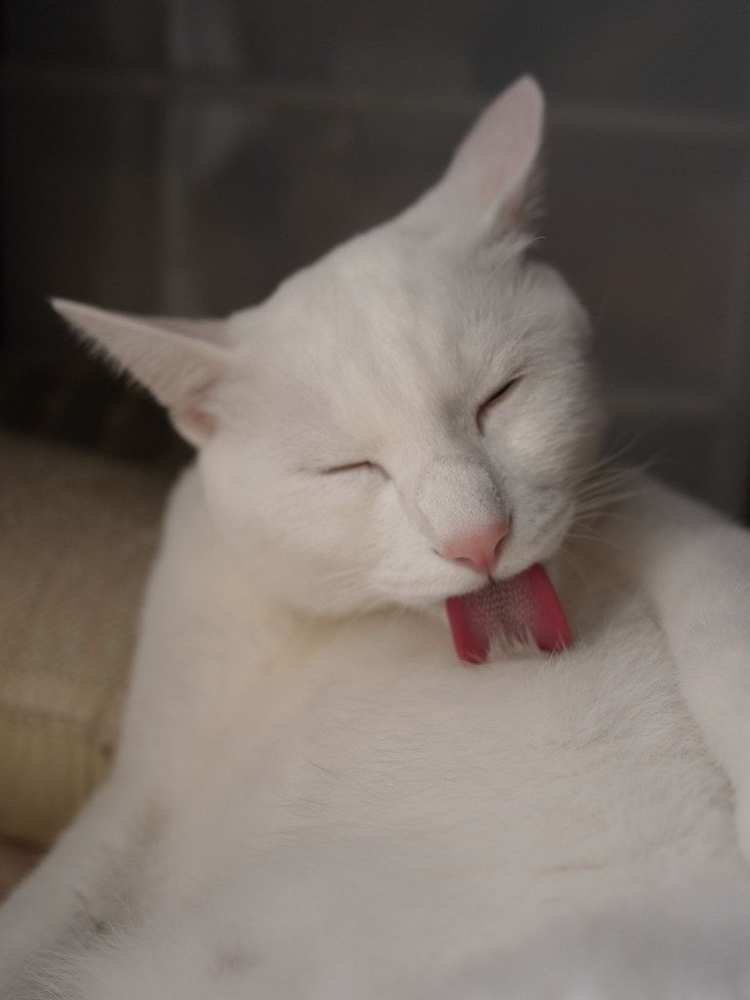
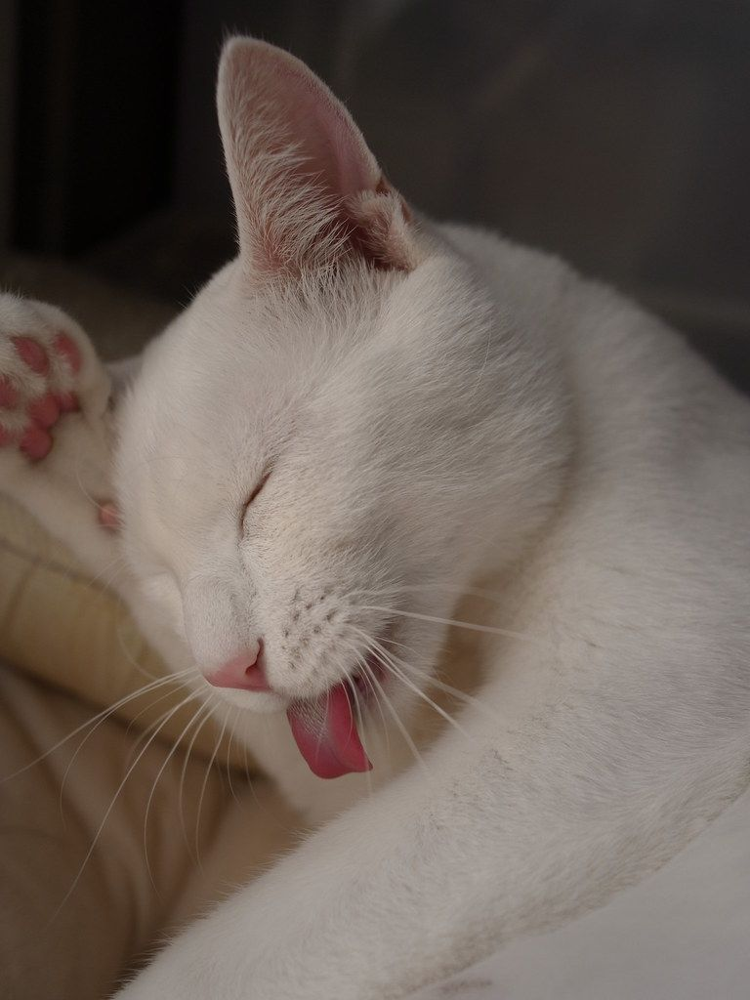
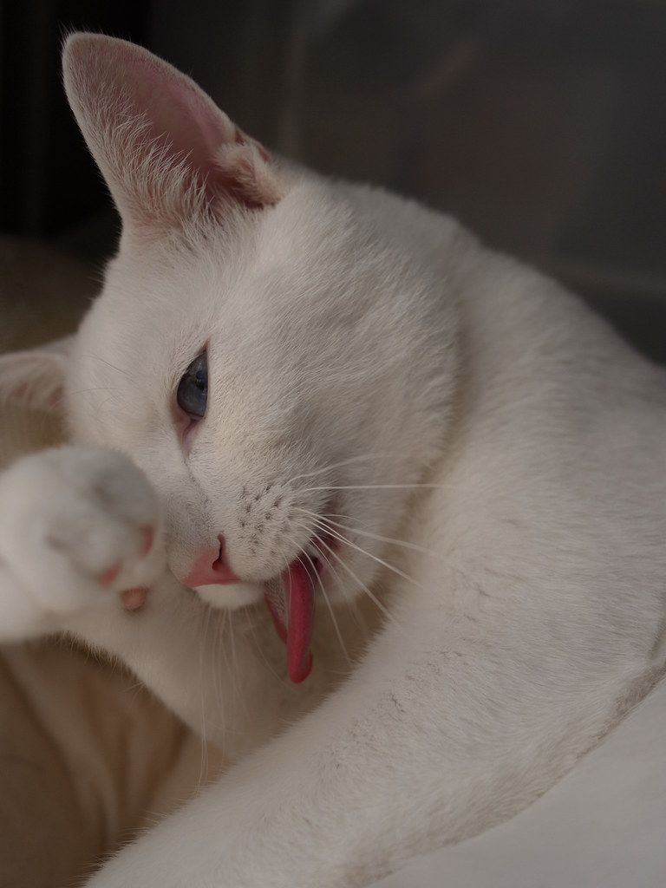

猫の抜け毛がひどい時期と冬の静電気対策、ブラッシングの頻度は？
公開 2026-11-16・日本ねこ編集部
結論から

掃除しても
この
抜け毛が増えるのはいつ？
外に
室内飼いの
ブラッシングの頻度の目安
| 時期 | 頻度の |
|---|---|
| 通常の | 週1回 |
| 換毛期 | 週2〜3回 |
ブラッシングで

冬の静電気を防ぐコツ
空気が
- 湿度を
保つ。 加湿器や濡れタオルで 40〜60%を 目安にします。 - ブラシの
素材を ナイロンなど合成繊維の選ぶ。 ブラシは 静電気を 起こしやすいとされています。 - 手を
少し 乾いた湿らせてから 触れる。 手より 静電気が 起きに くくなります。 - ミストブラシを
試す。 霧状の水で 静電気を 抑えながら ブラッシングできる 製品も 紹介されています。 水を 嫌がる 猫も いるので 様子を 見ながら 試してください。
抜け毛がひどいときに考えられる原因
換毛期以外にも、
- 皮膚病。外部寄生虫や
皮膚糸状菌症などが 挙げられています。 円形に 毛が 抜ける ・フケが 多い・赤みが あると いった 様子が 目安です。 - ホルモンの
異常。 甲状腺機能亢進症などが原因に なることもあると されています。 - ストレスに
よる 退屈や過剰な グルーミング。 ストレスで 毛づくろいを しすぎて 毛が 薄くなることがあります。 左右対称に 薄くなっている 場合は こちらの 可能性が 高いと する 見方も あります。

こんなときは動物病院へ
次のような
- 部分的に
ハゲている 場所が ある - 皮膚が
赤い・フケやかさぶたが 多い - いつもよりかゆがる・舐め続けている
- 急に
抜け毛の 量が 増えた
まず
まとめ
抜け毛は
うちの
参考にした情報
- 猫の
抜け毛が （PETsCARE）増える 理由の 解説記事 - 猫の
換毛期に （WWD JAPAN）関する 記事 - 猫の
静電気対策の （PETsCARE）解説記事 - 猫の
ブラッシングの （All About）頻度に 関する 記事 - 猫の
脱毛と （オリコン顧客満足度ランキング）病気に 関する 解説記事
この
よくある質問
猫の抜け毛はいつが多いですか？
外に
ブラッシングはどのくらいの頻度ですればいいですか？
一般的な
冬に静電気がひどいのはなぜですか？
空気が
抜け毛が多すぎるときは病気ですか？
換毛期以外の